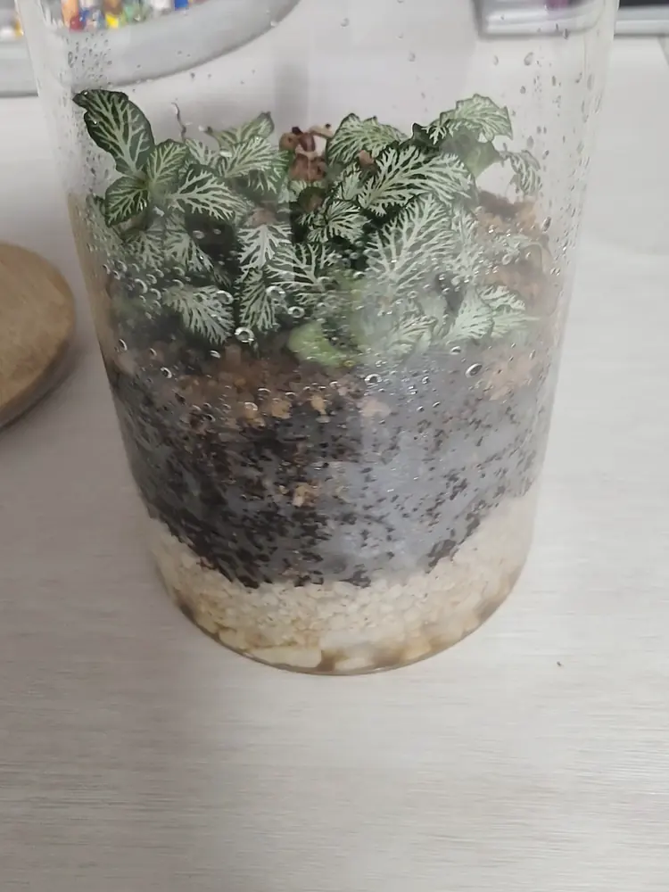
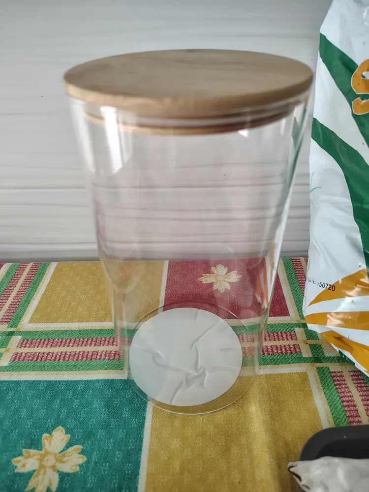
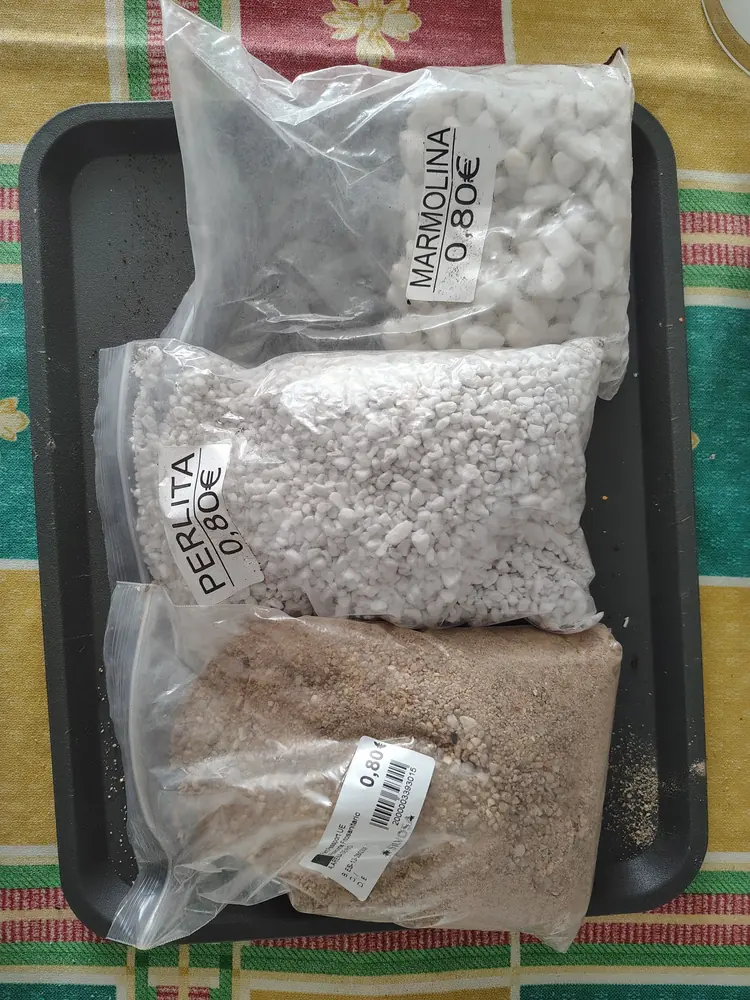
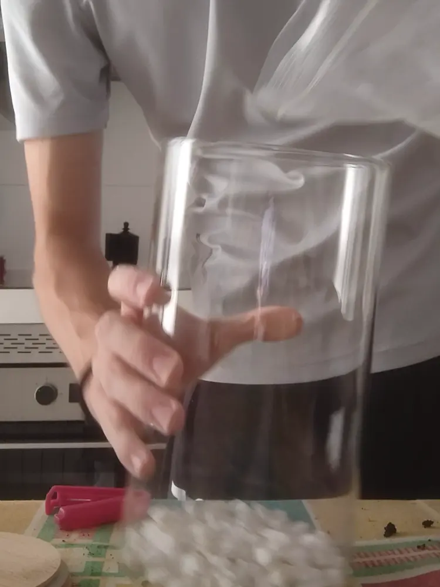
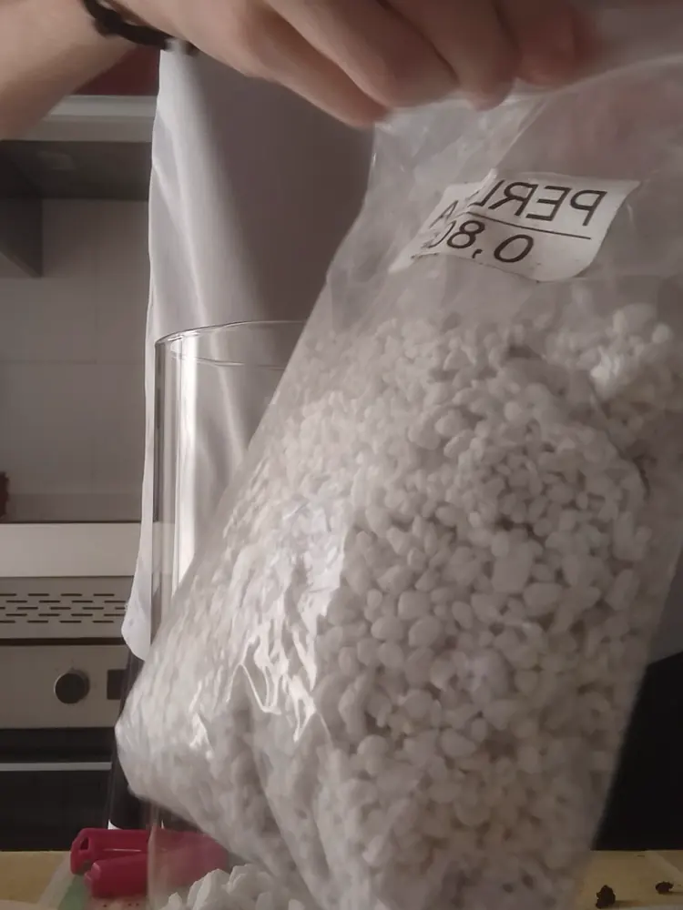
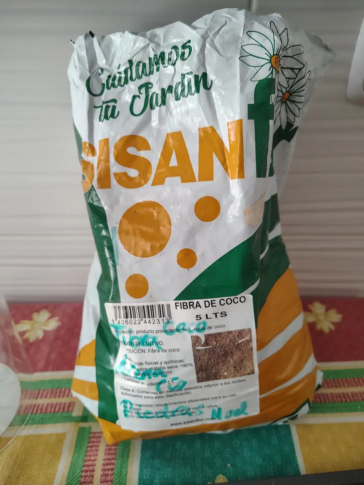
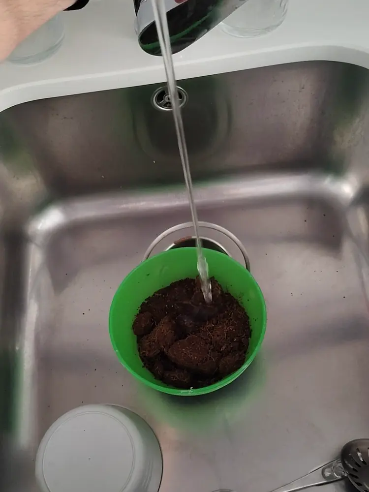
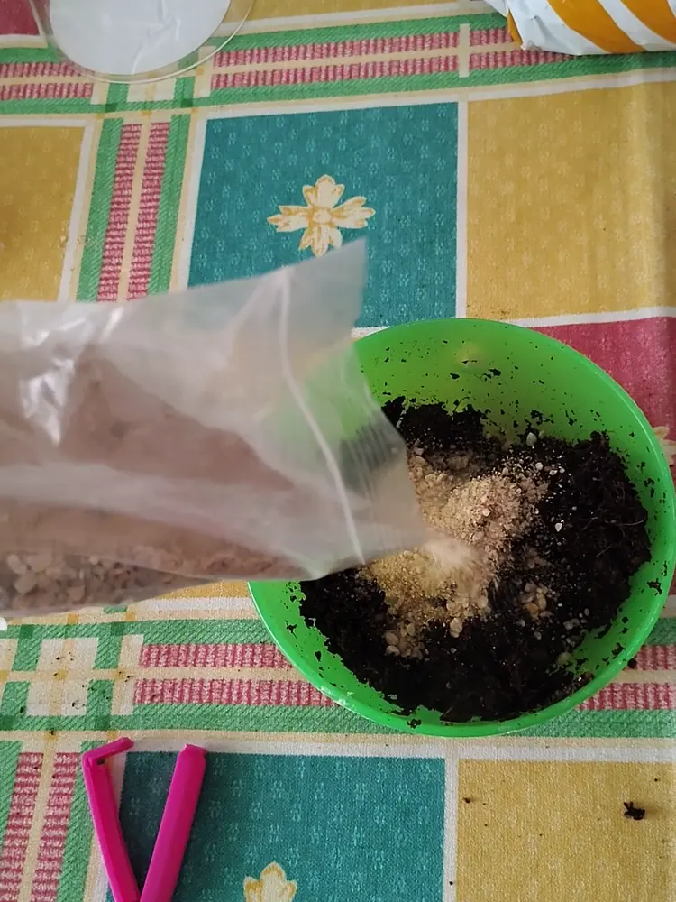
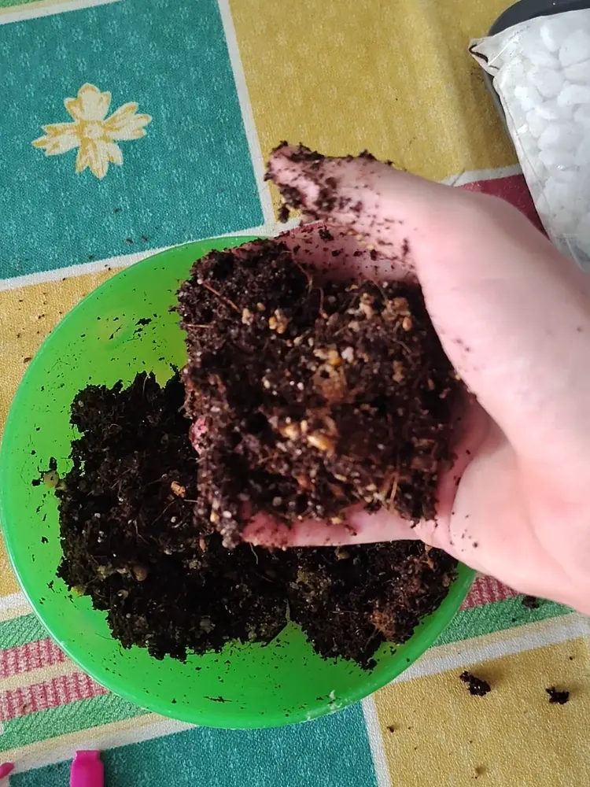
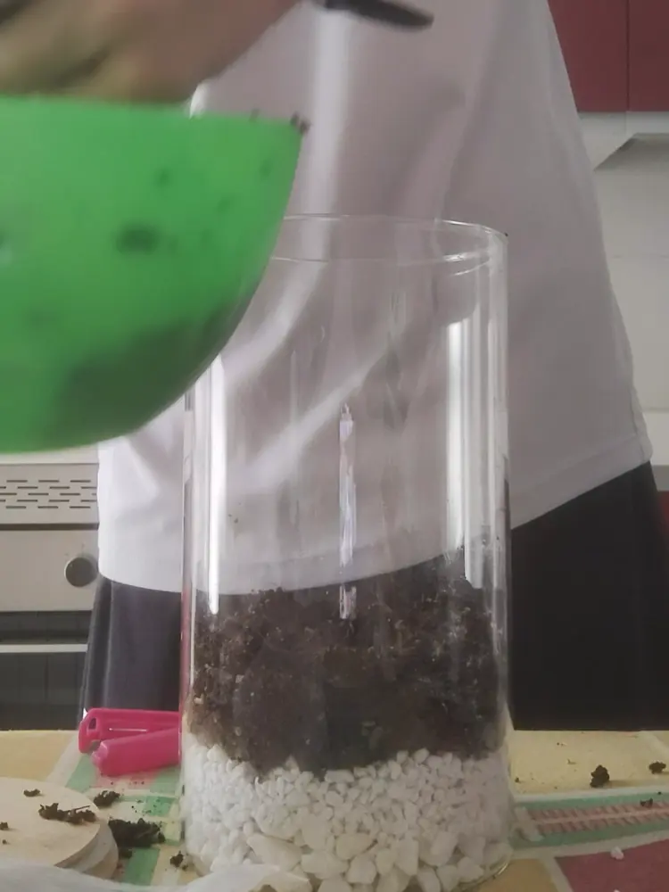

Mucha gente piensa que un terrario cerrado es un capricho caro, y la verdad es que no tiene por qué. El último que monté, el de la tapa de bambú que ves en la foto, me salió por menos de 10 €.
Así que aquí va mi lista de la compra real, con lo que compré, dónde y cuánto pagué por cada cosa. Nada de precios inventados ni de kits carísimos: lo que compré yo, con fotos de cada material y del montaje.

El resultado final: cuatro Fittonias sacadas de una sola maceta, en un tarro de 3 €.
La lista de la compra (con precios)
Ojo, que esos 13,40 € no son lo que cuesta un terrario. El saco de fibra de coco me ha dado para montar este y otros tres terrarios más, así que a este solo le toca una cuarta parte (unos 1,25 €). Haciendo la cuenta bien, este terrario me salió por unos 9,65 €.
1. El tarro: 3 € en TEDi
No hace falta gastarse un dineral en una urna "profesional". Este tarro lo encontré en TEDi por unos 3 € y tiene entre 3 y 5 litros, un tamaño perfecto para un terrario cerrado de Fittonias. Lo mejor es que viene con tapa de bambú, que cierra bien y queda muy bonita.

El tarro recién comprado. Más sencillo imposible.
Si tienes un tarro de cocina en casa que tenga tapa, también te vale y te ahorras estos 3 €. Si quieres saber qué recipientes funcionan mejor, te lo cuento en cómo elegir el cristal para tu terrario.
2. La planta: una Fittonia de 3 € (que en realidad son cuatro)
Aquí está el truco que más dinero ahorra. Compré una sola Fittonia en Viveros Silvosa por unos 3 €, pero en estas macetas muchas veces no viene una sola planta, sino varias juntas.

La Fittonia tal cual la compré. Parece una sola planta, pero no lo es.
Al sacarla de la maceta y quitarle con cuidado la tierra de las raíces, pude separarla en cuatro plantas distintas, cada una con sus propias raíces. Así el terrario queda mucho más lleno desde el primer día sin tener que comprar cuatro macetas.

Las cuatro Fittonias que salieron de una sola maceta, ya limpias y listas para plantar.
3. El drenaje: marmolina y perlita (1,60 €)
Para el fondo compré dos bolsitas a 0,80 € cada una: marmolina, que son esas piedrecitas blancas, y perlita.

Las tres bolsitas a granel: marmolina, perlita y arena de río, a 0,80 € cada una.
Primero eché la marmolina en el fondo del tarro para que el agua que sobre se quede ahí abajo y no llegue a las raíces.

Primera capa: la marmolina.
Encima de la marmolina eché una capa de perlita. Esta vez no puse malla separadora (en mi guía para montar tu primer terrario te cuento cómo hacerla con una camiseta vieja o una red de patatas).

Segunda capa: la perlita, directamente encima de las piedras.
4. La mezcla: fibra de coco y arena de río
Normalmente uso mi receta 50-30-20 con sustrato universal, fibra de coco y arena de río (la tienes explicada en cómo hacer un sustrato que dure años). Pero esta vez no me quedaba sustrato universal, así que tiré solo de fibra de coco y arena de río. Y como ves, funciona perfectamente.

El saco de fibra de coco de 5 litros. Me ha dado para cuatro terrarios.
La fibra de coco viene seca, así que lo primero es echarla en un bol y añadirle agua para que se hidrate. Yo le eché un chorro de agua y la fui mezclando con las manos hasta que quedó esponjosa.

Hidratando la fibra de coco en el fregadero.
Después le añadí la arena de río y lo mezclé todo a mano hasta que quedó uniforme. Es la parte más "plasta" porque te pones perdido, pero merece la pena hacerlo bien para que no queden zonas solo de coco o solo de arena.

Añadiendo la arena de río a la fibra de coco.

Así tiene que quedar: húmeda, suelta y sin chorrear.
5. El montaje
Con todo preparado, eché la mezcla encima de la perlita poco a poco y sin apretarla.

Las capas ya montadas: marmolina, perlita y la mezcla encima.
Luego toca plantar las cuatro Fittonias una a una, haciendo un agujero con el dedo para cada una.

Plantando las Fittonias una a una.
Y ya está: le pones la tapa de bambú y tienes un terrario cerrado completo.

Vista desde arriba con las cuatro Fittonias ya plantadas.
¿Merece la pena hacerlo tú mismo?
Si te gusta mancharte las manos, sin duda. Un terrario cerrado ya montado en una tienda online suele rondar los 40-50 € en tamaño mediano, y aquí tienes uno parecido por menos de 10 € en materiales y una tarde entretenida.
Si no tienes ningún vivero cerca, también puedes conseguir la fibra de coco, la arena de río, las piedras para el drenaje o un tarro de cristal en Amazon. Eso sí, te aviso: suelen salir algo más caros que comprarlos a granel en un vivero.
Preguntas rápidas
¿Se puede hacer todavía más barato? Sí. Si usas un tarro de cocina que ya tengas en casa, te ahorras los 3 € del tarro y el terrario te sale por unos 6-7 €.
¿Hace falta carbón activo o musgo? En este no puse ninguna de las dos cosas y no le hacen falta para funcionar. Son extras que puedes añadir si quieres.
¿Por qué no lleva sustrato universal? Porque se me había acabado. Mi mezcla de siempre lo lleva, pero con fibra de coco y arena de río la Fittonia también va genial.

¿Prefieres que te lo monte yo?
Hago terrarios cerrados por encargo en la Comunidad de Madrid, desde 25 €.
Ver cómo pedir el tuyo →